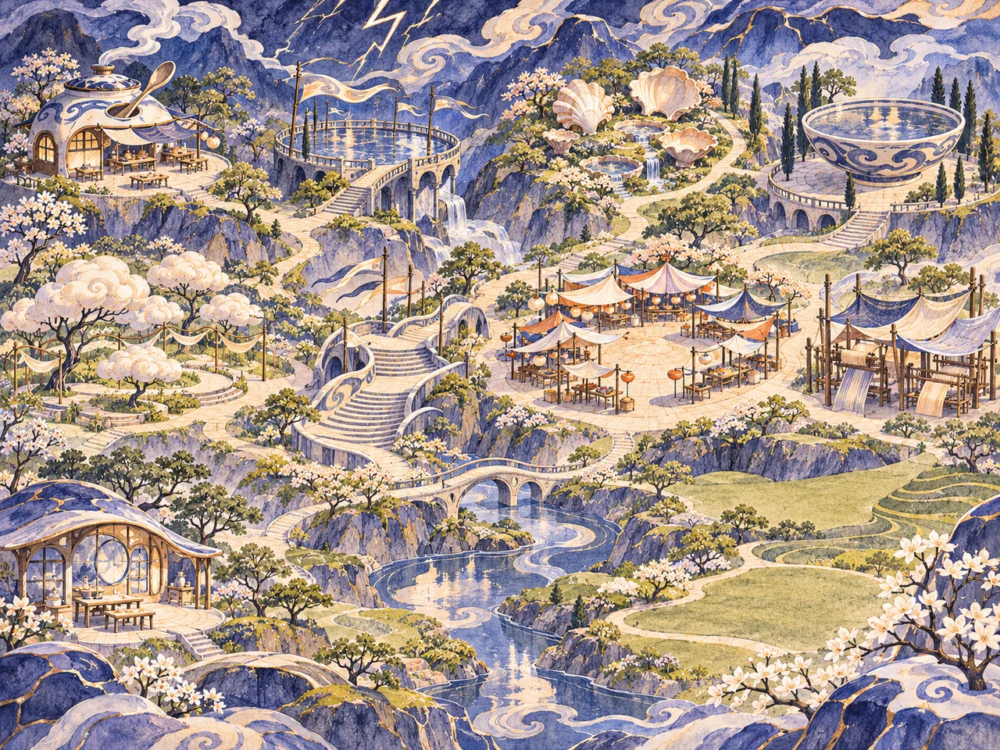
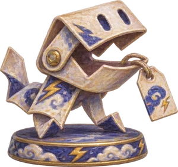
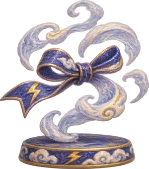

Кухня на краю грозы
Карты и фигурки ведущего
Игровой комплект
3 игрока · 4 игрока · 5 игроков · 6 игроков · 7 игроков · 8 игроков
Карта кампании

Поля боя


Герои


Персонажи ведущего


Противники


Бумажный щёлкун 1Бумажный щёлкун 2Бумажный щёлкун 6Бумажный щёлкун 3Бумажный щёлкун 4Бумажный щёлкун 5 Облачный складкоед 4Облачный складкоед 3Облачный складкоед 5Облачный складкоед 2Облачный складкоед 6Облачный складкоед 1
Облачный складкоед 4Облачный складкоед 3Облачный складкоед 5Облачный складкоед 2Облачный складкоед 6Облачный складкоед 1

Узел порыва 4Узел порыва 2Узел порыва 5Узел порыва 6Узел порыва 3Узел порыва 1